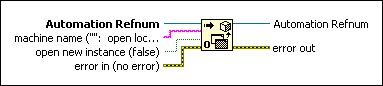
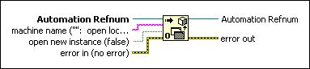

Automation Open Function
Owning Palette: ActiveX Functions
Requires: Base Development System (Windows)
Returns an automation refnum, which points to a specific ActiveX object.

 Add to the block diagram Add to the block diagram |
 Find on the palette Find on the palette |
Owning Palette: ActiveX Functions
Requires: Base Development System (Windows)
Returns an automation refnum, which points to a specific ActiveX object.

| Add to the block diagram |
Find on the palette |
 |
Automation Refnum provides the object type for the Automation Refnum output. |
 |
machine name indicates on which machine the VI should open the Automation Refnum. If no machine name is given, the object is opened on the local machine. |
 |
If open new instance is TRUE, LabVIEW creates a new instance of the Automation Refnum. If FALSE (default), LabVIEW tries to connect to an instance of the refnum that is already open. If the attempt is unsuccessful, LabVIEW opens a new instance. |
 |
error in describes error conditions that occur before this node runs. This input provides standard error in functionality. |
 |
Automation Refnum is the refnum associated with an ActiveX object. |
 |
error out contains error information. This output provides standard error out functionality. |
Select the class of the object by right-clicking the function and selecting Select ActiveX Class from the shortcut menu. After you open the refnum, you can pass it to other ActiveX functions. Select only creatable classes as inputs to this function. If you wire machine name, the object opens on the remote machine. Otherwise, the object opens on the local machine.
 | Note Distributed COM must be properly installed and configured to open a remote reference. |
Refer to the Excel - ActiveX Event Callback VI in the labview\examples\Connectivity\Excel directory for an example of using the Automation Open function.